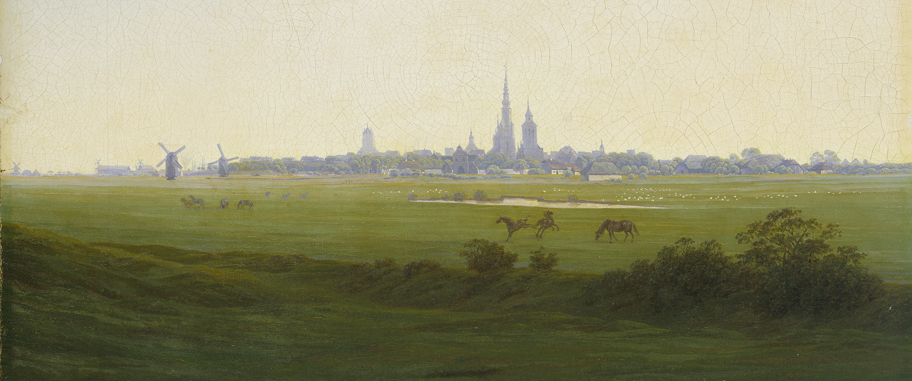

Kirjallisuuden koettu tila ja sen digitaalinen tutkimus
Asko Nivala, Jasmine Westerlund, Juhana Saarelainen & Harri Kiiskinen: “Kirjallisuuden koettu tila ja sen digitaalinen tutkimus” Kirjallisuudentutkimuksen päivät 2023. Esitelmä on osa “Kirjallisuushistorian uudistuvat metodit” -työryhmää. Turku 4.5.2023 klo 13.00 – 14.45 (Arcanum, A270).
Abstrakti
Suomalaisen kirjallisuuden atlas -hankkeessa (Alfred Kordelinin säätiön suuret kulttuurihankkeet 2022–2024) kartoitamme suomalaisen kirjallisuuden kuvittelemaa tilaa vuosina 1870–1940. Hanke soveltaa neuroverkkoon perustuvaa nimentunnistusta, linkitettyä avointa dataa ja paikkatietojärjestelmiä kirjallisuushistorian tutkimukseen. Tavoitteenamme on tunnistaa suomenkielisessä kirjallisuudessa vuosina 1870–1940 mainitut paikannimet nimentunnistuksen avulla. Luokitamme toponyymit mm. geopoliittisiin alueisiin, luonnonpaikkoihin ja rakennuksiin. Koodamme tunnistetut paikat myös koneluettavina annotaatioina digitoituihin kokoteksteihin säilyttääksemme niiden alkuperäisen tekstiyhteyden. Rikastamme tunnistettuja paikannimiä linkittämällä ne avoimeen semanttiseen verkkoon (Wikidata), jolloin voimme myös yksilöidä viittauksen kohteena olevat tilalliset entiteetit ja yhdistää ne maantieteellisiin koordinaatteihin. Tästä syntyneen paikkatietojärjestelmän avulla luomme kotimaisen kirjallisuuden kartaston, joka julkaistaan hankkeen lopuksi interaktiivisena verkkosivuna sekä avoimena datasettinä.
1800-luvun romantiikan koneihmiset
Frankenstein ja vampyyri – 1800-luvun romantiikan hirviöt
Voiko 1800-luvun alun koettua tilaa tutkia digitaalisesti?
Romantic Cartographies -hankkeeni vertailee brittiläisen ja saksalaisen romantiikan kirjallisuuden rakentamaa tilaa 1790–1840-luvuilla. Projekti käyttää digitoituja aineistoja ja menetelmiä. Haravoin fiktiivisistä teksteistä ja matkakirjoista paikannimiä hyödyntäen luonnollisten kielten prosessointia (NLP) ja nimettyjen entiteettien tunnistusta (NEL). Tutkimusaineiston analyysissä ja rikastamisessa hyödynnän erityisesti paikkatietojärjestelmiä (GIS) ja linkitettyä avointa dataa (LOD).
Monet analysoimani tekstit sisältävät yllättäviäkin maantieteellisiä viittauksia, joiden kartoittaminen avaa uusia reittejä tunnettuihin romantiikan ajan klassikoihin ja nostaa esiin myös unohtuneita teoksia. 1800-luvun alun romantiikan fiktion ja matkakirjallisuuden tilallisten viittausten digitointi herättää kuitenkin uusia metodologisia ongelmia. Fiktiiviset maisemakuvaukset ovat usein häilyviä, mutta paikkatietojärjestelmän käyttäminen edellyttää tarkkojen numeeristen koordinaattien antamista sijainneille. Voiko romantiikan tekstien rakentamaa kokemusta paikoista (place/Ort) ja niiden välisistä laadullisista eroista palauttaa kartesiolaiseen homogeeniseen avaruuteen (space/Raum)? Vaikka kokemus (Erfahrung) tai elämys (Erlebnis) ovat lähtökohtaisesti subjektiivisia, voiko kokemuksien kielellisiä ilmauksia teksteissä vertailla algoritmisesti? Esitelmäni pohtii näitä metodologisia ongelmia muutamien lähdekorpuksestani nousseiden esimerkkien avulla.
Cityscapes and Landscapes in British and German Romanticism (1790–1840)
The Pleasures of Imagination – Art, Architecture and Aesthetics in 18th Century Europe
Suomen 1700-luvun tutkimuksen seuran konferenssi Helsingissä ja Zoomissa 21–22.10.2021.
Aalto yliopisto, Runeberginkatu 14–16 sisäänkäynti A, 3-kerros.
Oma esitelmäni “Cityscapes and Landscapes in British and German Romanticism (1790–1840)” on 22.10.2021 klo 14.30.
 Caspar David Friedrich: Wiesen bei Greifswald (1821/1822). Wikimedia Commons.
How Finnish Romanticism became Finnish: The Romantic Background of the Kalevala
Unknown Tongues is a symposium on Romanticism’s minor and marginal languages. On 24 September 2021, invited leading scholars will gather online to debate and discuss what a closer study of (trans)national Romanticisms through their languages can bring to Romantic and nineteenth-century studies, and what relevance a recovery of these traditions may have for our sense of the present.
Organised by Brecht de Groote (Universiteit Gent ⬨ University of Ghent) and Rhys Kaminski-Jones (Prifysgol Cymru y Drindod Dewi Sant ⬨ University of Wales Trinity Saint David).